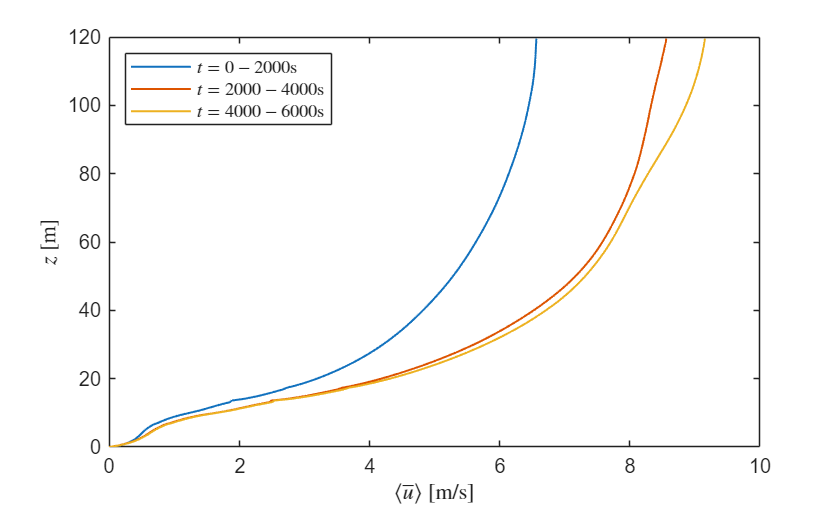
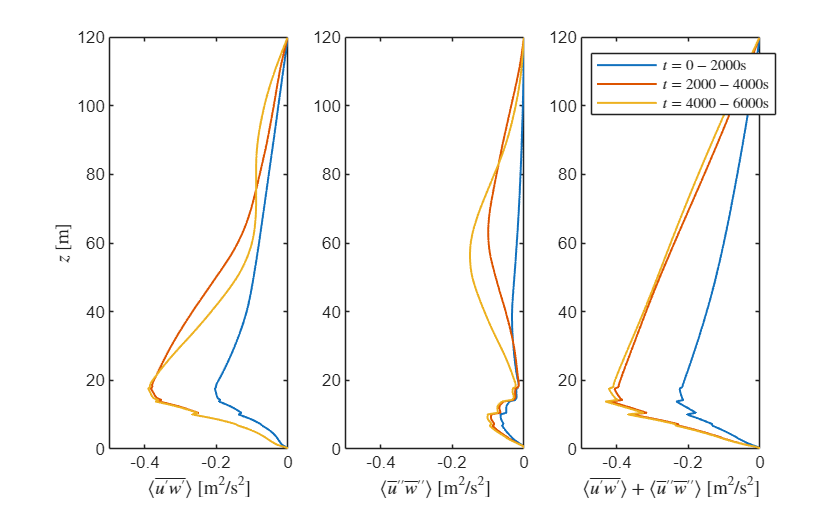
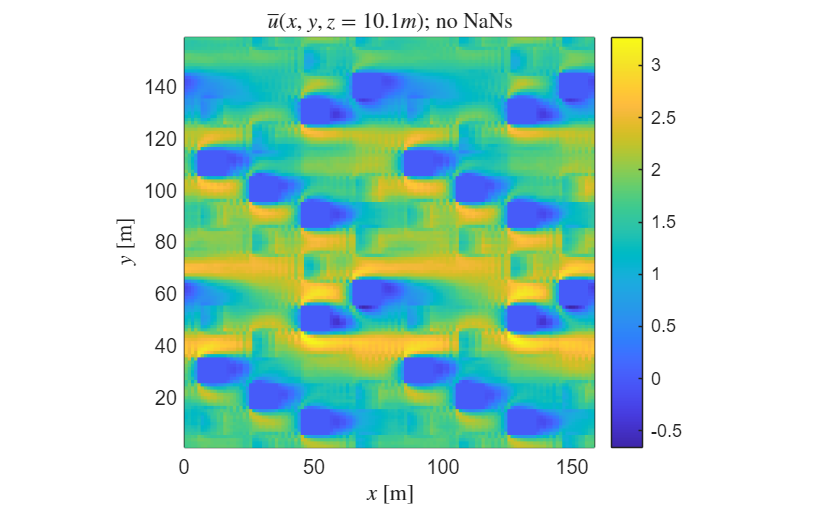
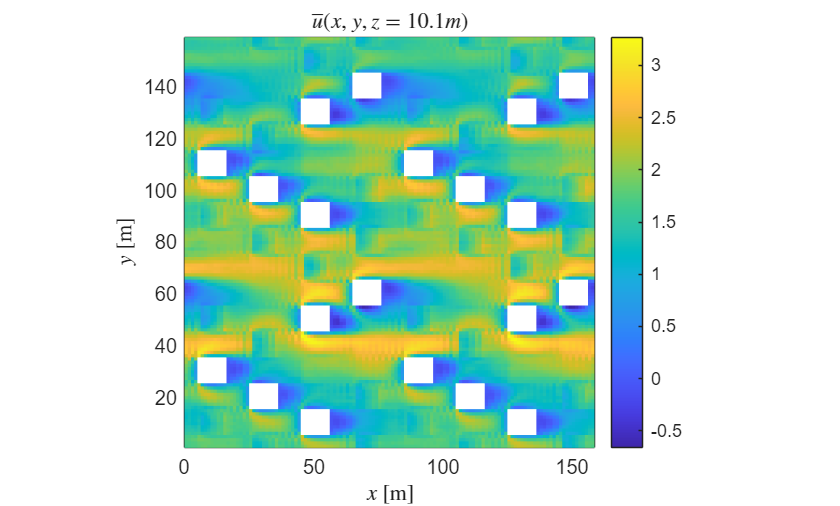
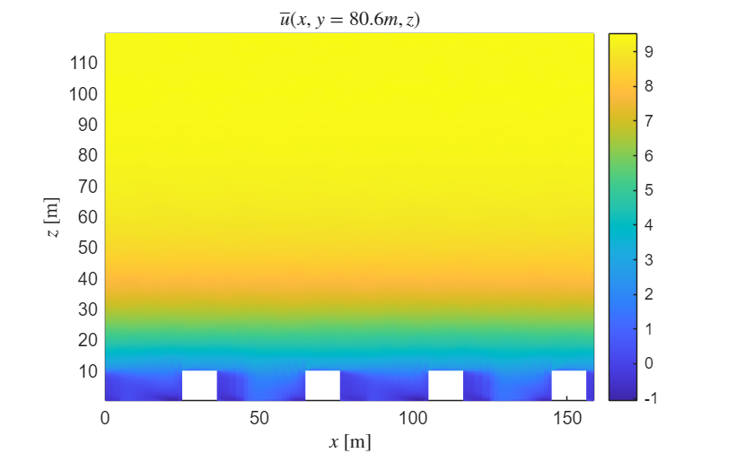
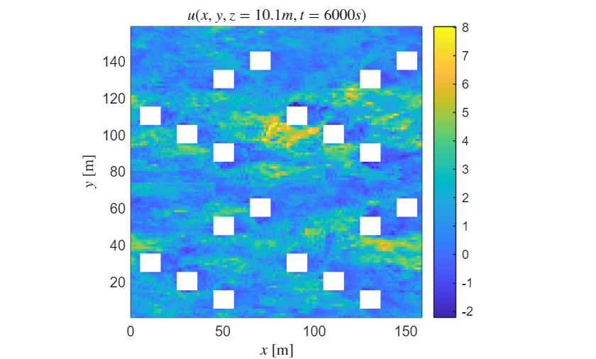
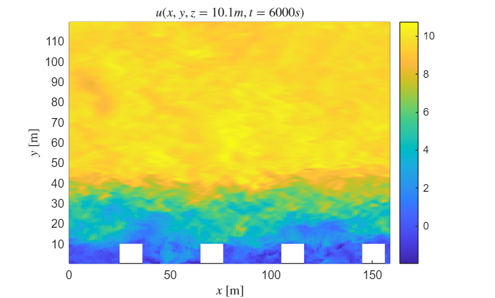
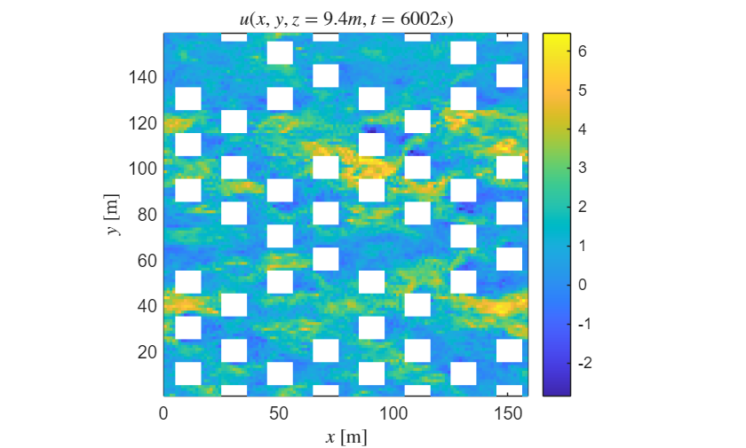
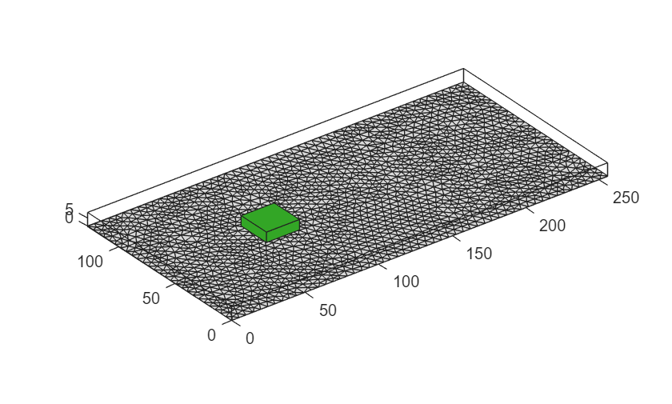

Working with uDALES field data in MATLAB¶
This tutorial describes how to read and process field data output of the LES code uDALES using MATLAB. In addition, it describes some important concepts, such as the grid layout, variable locations and averaging procedures.
The udbase post-processing class reads in most important input parameters, and contains a number of methods to load field data:
- load_stat_xyt. This method load the 1D slab- and time-averaged statistics from the file
xytdump.expnr.nc. Several time-intervals may be present in the data. - load_stat_t. This method loads the 3D time-averaged statistics from the file
tdump.expnr.nc. Several time-intervals may be present in the data. - load_stat_tree. This method loads the 3D time-averaged statistics of the tree source terms from the file
treedump.expnr.nc. This method works exactly the same way asload_stat_t. - load_field. This method loads instantaneous 3D data from the file
fielddump.expnr.nc. Several output times may be present in the data. - load_slice. This method loads instantaneous 2D slices of instantaneous 3D data from the file
Xslicedump.expnr.nc. Several output times may be present in the data. - plot_trees. This method plots tree patches.
The live matlab file of this tutorial can be found in the repository in the folder /docs/tutorial_mlx.
Initialising udbase¶
The starting point of this tutorial is that you have run a simulation and have merged the output files. If the simulations were performed on a HPC system, we assume that you have copied the output directory to your own workstation. Some of the netCDF (*.nc) files may be very large and you may only want to copy these if you plan to analyse the data.
Note that the uDALES/tools/matlab path must be added via the Set Path button in order to use the udbase class. Alternatively, it can be added using the addpath function inside the script (done here).
% preamble
clear variables
close all
% add the uDALES matlab path
addpath('path_to_udales\tools\matlab')
% create an instance of the udbase class
expnr = 110;
expdir = 'path_to_experiments\110';
sim = udbase(expnr, expdir);
Warning: prof.inp.110 not found. Assuming equidistant grid.
uDALES grid layout¶
uDALES uses a grid that is staggered, which means that not all variables are defined at the same location on the grid. Staggering is computationally advantageous [1], but requires care with plotting, as it is imporant to plot variables in their correct location. uDALES' grid layout is as follows.
% 2D view of staggered grid arrangement
% (x-z direction; grid layout in other directions is identical)
%
% w(i,j,k+1)
% ^
% zm(k+1) -- --------|--------
% | |
% | c(i,j,k) |
% zt(k) -- u(i,j,k) ---> o ---> u(i+1,j,k)
% | |
% | ^ |
% zm(k) -- --------|--------
% w(i,j,k)
%
% | | |
% xm(i) xt(i) xm(i+1)
%
% Coordinate positions (assuming z-grid is equidistant)
% xm(i) = (i-1) * dx; xt(i) = (i-1/2) * dx
% ym(j) = (j-1) * dy; yt(j) = (j-1/2) * dy
% zm(k) = (k-1) * dz; zt(k) = (k-1/2) * dz
%
% Grid increments:
% dzt(k) = zm(k+1) - zm(k)
% dzm(k) = zt(k) - zt(k-1)
%
% Note that z does not have to be equidistant.
There are six arrays for the coordinates:
xm.x-coordinate of cell edgesxt.x-coordinate of cell centresym.y-coordinate of cell edgesyt.y-coordinate of cell centreszm.z-coordinate of cell edgeszt.z-coordinate of cell centres
The field variables are defined as follows
u(i,j,k)is the u-velocity at location(xm(i),yt(j),zt(k))v(i,j,k)is the v-velocity at location(xt(i),ym(j),zt(k))w(i,j,k)is the w-velocity at location(xt(i),yt(j),zm(k))c(i,j,k)is a scalar quantity at location(xt(i),yt(j),zt(k))
Scalars (potential temperature, specific humidity, pollutants) are always defined in the cell-centre. Fluxes are typically defined on the cell edges.
You can always look up where the variables are defined from the output variable information using the load.. methods.
Averages used in uDALES output¶
Many of the outputs of uDALES have been averaged in some manner. This is advantageous as these are often the quantities we are interested in, and also require much less diskspace and memory to process.
The Reynolds decomposition is used to decompose variables into mean quantities and their fluctuations [2]:
\varphi \left(x,y,z,t\right)=\bar{\varphi \;} \left(x,y,z\right)+\varphi {\;}^{\prime } \left(x,y,z,t\right),
where the overbar denotes time-averaging. The time-averaged data is contained in the tdump.expnr.nc file.
Often, we are interested in the quantities that are additionally averaged in the horizontal plane. This is often referred to as a slab average. In this case it is common to further decompose the time-averaged quantity \bar{\varphi} into a spatial average \langle \bar{\varphi} \rangle \left(z\right) (i.e., average over the horizontal surface) and its spatial variation \bar{\varphi} \textrm{"}\left(x,y,z\right)=\bar{\varphi} \left(x,y,z\right)-\langle \bar{\varphi} \rangle \left(z\right). Upon substituting this expression into the equation above, we obtain the triple decomposition [3]:
\varphi \left(x,y,z,t\right)=\langle \bar{\varphi} \rangle \left(z\right)+\bar{\varphi} \textrm{"}\left(x,y,z\right)\;+\varphi^{\prime } \left(x,y,z,t\right).
Here, \langle \bar{\varphi \;} \rangle is an intrinsic average, defined as [3]
$$ \langle \bar{\varphi} \rangle \;\left(z\right)=\frac{1}{A_f }\int_{\Omega_{f\;} } \varphi \;\mathrm{dA} $$
where A_f \left(z\right) is the area occupied by fluid and \Omega_f is the horizontal surface that is occupied by the fluid. The quantity \langle \bar{\varphi} \rangle represents the average value of \bar{\varphi} inside the fluid between the buildings. Another commonly used quantity is the comprehensive average \langle \bar{\varphi} \rangle_C, which is defined as
$$ \langle \bar{\varphi} \rangle_C \left(z\right)=\frac{1}{A}\int_{\Omega_{f\;} } \varphi \;\mathrm{dA}=\frac{A_f }{A}\langle \bar{\varphi} \rangle \left(z\right) $$
where A is the total surface area. In many cases, it is more convenient to work with comprehensive averages than intrinsic averages, particularly when considering averaged budgets of momentum, temperature etc [3]. To convert the intrinsic-average output from uDALES into a comprehensive average, simply multiply the intrinsic average by A_f /A as shown above. Time and intrinsically-averaged data is contained in the xytdump.expnr.nc file.
load_stat_xyt: loading time- and slab-averaged data¶
help sim.load_stat_xyt
--- help for udbase/load_stat_xyt ---
A method to retrieve plane- and time-averaged 1D statistics
information from the xytdump file.
load_stat_xyt(OBJ) displays the variables in the xytdump file
load_stat_xyt(OBJ, svar) retrieves a variable from the xytdump file
Example (view contents of output):
obj = udbase(expnr);
obj.load_stat_xyt();
This method loads a single output variable var at a time. In order to understand which variables are present in the output file, call the method without input arguments.
sim.load_stat_xyt();
Contents of xytdump.110.nc:
Name Description Units Size Dimensions
___________ _____________________________________ _______ _____ __________
pxyt Pressure kgm/s^2 256x3 zt, time
qtxyt Moisture kg/kg 256x3 zt, time
thlpthlptxy Temp. variance K^2 256x3 zt, time
thlsgsxyt SGS heat flux K m/s 256x3 zm, time
thlxyt Temperature K 256x3 zt, time
time Time s 3 time
tketxyc tke m^2/s^2 256x3 zt, time
upuptxyc u variance m^2/s^2 256x3 zt, time
upvpxyt Turbulent mom. flux m^2/s^2 256x3 zm, time
upwpxyt Turbulent mom. flux m^2/s^2 256x3 zm, time
usgsxyt SGS mom. flux m^2/s^2 256x3 zm, time
uvxyt Kinematic mom. flux m^2/s^2 256x3 zm, time
uwxyt Kinematic mom. flux m^2/s^2 256x3 zm, time
uxyt Streamwise velocity m/s 256x3 zt, time
vpvptxyc v variance m^2/s^2 256x3 zt, time
vpwpxyt Turbulent mom. flux m^2/s^2 256x3 zm, time
vsgsxyt SGS mom. flux K m/s 256x3 zm, time
vwxyt Kinematic mom. flux m^2/s^2 256x3 zm, time
vxyt Spanwise velocity m/s 256x3 zt, time
wpthlpxyt Turbulent heat flux K m/s 256x3 zm, time
wpwptxyc w variance m^2/s^2 256x3 zt, time
wthlxyt Kinematic heat flux K m/s 256x3 zm, time
wwxyt Kinematic mom. flux m^2/s^2 256x3 zm, time
wxyt Vertical velocity m/s 256x3 zm, time
zm Vertical displacement of cell edges m 256 zm
zt Vertical displacement of cell centers m 256 zt
Before showing how to display the data, we note that the variable 'time' has a size 1 \times 3. Let's load the data to see what is inside.
txyt = sim.load_stat_xyt('time')
txyt = 3x1 single column vector
1.0e+03
2.0001
4.0001
6.0001
There are three times at which output has been generated. This can be understood by considering the input parameter values
sim.tstatsdump
ans = 2000
sim.runtime
ans = 6002
Therefore, the entire runtime is divided into 3 time intervals, in each of which the time average is taken.
The vertical coordinate z and mean streamwise velocity \langle \bar{u} \rangle can be loaded as:
zm = sim.load_stat_xyt('zm');
uxyt = sim.load_stat_xyt('uxyt');
Since \langle \bar{u} \rangle is the streamwise velocity, it is defined in the vertical cell-center and should thus be plotted against zm. We plot \langle \bar{u} \rangle for each averaging time interval below.
tstart = 0;
leg = cell(size(txyt)); % create a cell array to store each of the legend entries
figure
hold on
for n = 1:length(txyt)
plot(uxyt(:, n), zm, 'Linewidth', 1);
leg{n} = ['$t=', num2str(tstart, '%8.0f'), '-', num2str(txyt(n), '%8.0f'), '$s'];
tstart = txyt(n);
end
hold off
box on
ylabel ('$z$ [m]', 'Interpreter', 'latex')
xlabel ('$\langle \overline{u} \rangle$ [m/s]', 'Interpreter', 'latex')
legend(leg, 'Location','northwest', 'Interpreter', 'latex')

As can be seen, during the first time-interval, the flow is substantially slower than in the other two intervals, suggesting an initial transient. Although the profiles for last two time-intervals are close, they are not identical showing that either the flow has not equilibriated entirely, or the chosen averaging time-interval was too small, or both.
Using the continuity equation it can be shown that for period domains \langle \bar{w} \rangle =0, which also implies that \langle \bar{w} \textrm{"}\rangle =0. This means that the dispersive momentum flux \langle \bar{u\;} \textrm{"}\bar{w\;} \textrm{"}\rangle is equal to \langle \bar{\;u} \;\bar{\;w} \rangle. Thus, we can load the mean turbulent horizontal momentum flux \langle \bar{u^{\prime } w^{\prime } } \rangle and dispersive flux \langle \bar{u\;} \textrm{"}\bar{w\;} \textrm{"}\rangle can be loaded as:
zt = sim.load_stat_xyt('zt'); % location of vertical fluxes of horizontal momentum
upwpxyt = sim.load_stat_xyt('upwpxyt'); % turbulence fluxes (p indicates prime)
uwxyt = sim.load_stat_xyt('uwxyt'); % dispersive fluxes
Note that these terms should be plotted against against zt (cell center) since they represent the vertical exchange of horizontal momentum. Again, we plot the averages for each time interval (now we can do this more compactly as we do not need to create the legend entries):
figure
subplot(1,3,1);
plot(upwpxyt, zt, 'LineWidth',1);
xlabel ('$\langle \overline{u^\prime w^\prime} \rangle$ [m$^2$/s$^2$]', ...
'Interpreter', 'latex')
ylabel ('$z$ [m]', 'Interpreter', 'latex')
xlim([-0.5 0])
subplot(1,3,2);
plot(uwxyt, zt, 'LineWidth',1);
xlabel (['$\langle \overline{u}^{\prime\prime} \overline{w}^{\prime\prime} \rangle$' ...
' [m$^2$/s$^2$]'], 'Interpreter', 'latex')
xlim([-0.5 0])
subplot(1,3,3);
plot(uwxyt+upwpxyt, zt, 'LineWidth',1);
xlabel (['$\langle \overline{u^\prime w^\prime} \rangle+\langle \overline{u}^{\prime\prime} \overline{w}^{\prime\prime} \rangle$' ...
' [m$^2$/s$^2$]'], 'Interpreter', 'latex')
xlim([-0.5 0])
legend(leg, 'Location','northwest', 'Interpreter', 'latex')

To interpret this data, it is easiest to start with the right-most figure which plots the sum of the dispersive and turbulent fluxes. In a steady state (and for a simulation with a constant pressure gradient of average velocity), we expect this quantity to form a straight line, which is the case for the last two time-intervals. The data are also nearly collapsing for the last two time-intervals, once more suggesting that these flows are close to a statistical steady state.
The turbulent and dispersive fluxes show substantial variation for all three curves, showing that much longer averaging is needed to obtain reliable statistics for these quantities [4].
load_stat_t: loading time-averaged data¶
help sim.load_stat_t
--- help for udbase/load_stat_t ---
A method to retrieve time-averaged statistics from the tdump file
load_stat_t(OBJ) displays the variables in the tdump file
load_stat_t(OBJ, svar) retrieves a variable from the tdump file
Example (view contents of output):
obj = udbase(expnr);
obj.load_stat_t();
The time-averaged field data is stored in the tdump.expnr.nc file. The variables it contains can be listed as:
sim.load_stat_t();
Contents of tdump.110.nc:
Name Description Units Size Dimensions
___________ ________________________________________ _______ _____________ ________________
PSS PSS defect gm/s 128x128x256x3 xt, yt, zt, time
pt Pressure kgm/s^2 128x128x256x3 xt, yt, zt, time
qtt Moisture kg/kg 128x128x256x3 xt, yt, zt, time
sca1psca1pt Concentration variance 1 g^2/m^6 128x128x256x3 xt, yt, zt, time
sca1t Concentration field 1 g/m^3 128x128x256x3 xt, yt, zt, time
sca2psca2pt Concentration variance 2 g^2/m^6 128x128x256x3 xt, yt, zt, time
sca2t Concentration field 2 g/m^3 128x128x256x3 xt, yt, zt, time
sca3psca3pt Concentration variance 3 g^2/m^6 128x128x256x3 xt, yt, zt, time
sca3t Concentration field 3 g/m^3 128x128x256x3 xt, yt, zt, time
sca4psca4pt Concentration variance 4 g^2/m^6 128x128x256x3 xt, yt, zt, time
sca4t Concentration field 4 g/m^3 128x128x256x3 xt, yt, zt, time
sv1sgs SGS flux 1 gm/s 128x128x256x3 xt, yt, zm, time
sv2sgs SGS flux 2 gm/s 128x128x256x3 xt, yt, zm, time
sv3sgs SGS flux 3 gm/s 128x128x256x3 xt, yt, zm, time
sv4sgs SGS flux 4 gm/s 128x128x256x3 xt, yt, zm, time
thlpthlpt Temperature variance K^2 128x128x256x3 xt, yt, zt, time
thlt Temperature K 128x128x256x3 xt, yt, zt, time
time Time s 3 time
tketc TKE m^2/s^2 128x128x256x3 xt, yt, zt, time
upuptc u variance m^2/s^2 128x128x256x3 xt, yt, zt, time
upvpt Turbulent momentum flux m^2/s^2 128x128x256x3 xm, ym, zt, time
upwpt Turbulent momentum flux m^2/s^2 128x128x256x3 xm, yt, zm, time
ut Streamwise velocity m/s 128x128x256x3 xm, yt, zt, time
vpvptc v variance m^2/s^2 128x128x256x3 xt, yt, zt, time
vpwpt Turbulent momentum flux m^2/s^2 128x128x256x3 xt, ym, zm, time
vt Spanwise velocity m/s 128x128x256x3 xt, ym, zt, time
wpsca1pt Turbulent flux 1 gm/s 128x128x256x3 xt, yt, zm, time
wpsca2pt Turbulent flux 2 gm/s 128x128x256x3 xt, yt, zm, time
wpsca3pt Turbulent flux 3 gm/s 128x128x256x3 xt, yt, zm, time
wpsca4pt Turbulent flux 4 gm/s 128x128x256x3 xt, yt, zm, time
wpthlpt Turbulent heat flux K m/s 128x128x256x3 xt, yt, zm, time
wpwptc w variance m^2/s^2 128x128x256x3 xt, yt, zt, time
wt Vertical velocity m/s 128x128x256x3 xt, yt, zm, time
xm West-East displacement of cell edges m 128 xm
xt West-East displacement of cell centers m 128 xt
ym South-North displacement of cell edges m 128 ym
yt South-North displacement of cell centers m 128 yt
zm Vertical displacement of cell edges m 256 zm
zt Vertical displacement of cell centers m 256 zt
We load the time-averaged streamwise velocity field u, and the coordinates it relates to. Note that the appropriate coordinate arrays are listed in the 'Dimensions' column above.
ut = sim.load_stat_t('ut');
tt = sim.load_stat_t('time');
xm = sim.load_stat_t('xm'); % we are interested in plotting u
yt = sim.load_stat_t('yt');
zt = sim.load_stat_t('zt');
We plot a horizontal slice at the mean building height z=10m, choosing to use the statistics of the last time-interval
% find the k-index closest to z=10 m
zloc = 10;
k = find(abs(zt - zloc) == min(abs(zt - zloc)), 1);
% choose last time interval
n = length(tt);
figure
pcolor(xm, yt, squeeze(ut(:,:,k,n))');
shading flat; axis equal tight; colorbar
xlabel('$x$ [m]', 'Interpreter','latex')
ylabel('$y$ [m]', 'Interpreter','latex')
title(['$\overline u(x, y, z=', num2str(zt(k), '%8.1f'), 'm)$; no NaNs'], 'Interpreter','latex')

You can see that where the buildings are, the velocity is zero. However, since this is a solid domain, you will want to remove these from the plot. You can use the arrays Su, Sv, Sw and Sc in the sim object for this, which are 3D boolean matrices that indicate the cells contain buildings as true. There are four different arrays since the grid is staggered. We are dealing with the u-velocity, so will use the array Su. In order to do so, we can simply set the cells that contain solid elements to NaN.
curut = ut(:,:,:,n);
curut(sim.Su) = NaN;
figure
pcolor(xm, yt, squeeze(curut(:,:,k))');
shading flat; axis equal tight; colorbar
xlabel('$x$ [m]', 'Interpreter','latex')
ylabel('$y$ [m]', 'Interpreter','latex')
title(['$\overline u(x, y, z=', num2str(zt(k), '%8.1f'), 'm)$'], 'Interpreter','latex')

Similarly, we can plot a vertical slice in the middle of the y-domain as follows.
j = sim.jtot/2+1; % select the index in the middle of the domain span
figure
pcolor(xm, zt, squeeze(curut(:,j,:))');
shading flat; axis equal tight; colorbar
xlabel('$x$ [m]', 'Interpreter','latex')
ylabel('$z$ [m]', 'Interpreter','latex')
title(['$\overline u(x, y=', num2str(yt(j), '%8.1f'), 'm, z)$'], 'Interpreter','latex')

load_field: loading instantaneous 3D data¶
help sim.load_field
--- help for udbase/load_field ---
A method to retrieve instantaneous 3D data from from the fielddump file.
load_field(OBJ) displays the variables in the fielddump file
load_field(OBJ, svar) retrieves variable svar from the fielddump file
Example (view contents of output):
obj = udbase(expnr);
obj.load_field();
The instantaneous field data is stored in the fielddump.expnr.nc file, again, the variables it contains can be listed as:
sim.load_field();
Contents of fielddump.110.nc:
Name Description Units Size Dimensions
____ ________________________________________ _____ _____________ ________________
time Time s 3 time
u West-East velocity m/s 128x128x256x3 xm, yt, zt, time
v South-North velocity m/s 128x128x256x3 xt, ym, zt, time
w Vertical velocity m/s 128x128x256x3 xt, yt, zm, time
xm West-East displacement of cell edges m 128 xm
xt West-East displacement of cell centers m 128 xt
ym South-North displacement of cell edges m 128 ym
yt South-North displacement of cell centers m 128 yt
zm Vertical displacement of cell edges m 256 zm
zt Vertical displacement of cell centers m 256 zt
The variable time contains the times at which output is written. Let's load the data to see which times these are
t = sim.load_field('time')
t = 3x1 single column vector
1.0e+03
2.0000
4.0000
6.0000
These times can be understood by noticing that the output interval requested in the input file is
sim.tfielddump
ans = 2000
We load the data, once more using the horizontal velocity
u = sim.load_field('u');
xm = sim.load_field('xm');
yt = sim.load_field('yt');
zt = sim.load_field('zt');
We plot the instantaneous horizontal velocity at the same locations as in the previous section using the last output time
n = length(t); % choose last output time
% set the u-value inside buildings to NaN
curu = u(:,:,:,n);
curu(sim.Su) = NaN;
figure
pcolor(xm, yt, squeeze(curu(:,:,k))');
shading flat; axis equal tight; colorbar
xlabel('$x$ [m]', 'Interpreter','latex')
ylabel('$y$ [m]', 'Interpreter','latex')
title(['$u(x, y, z=', num2str(zt(k), '%8.1f'), 'm, t=', num2str(t(n), '%8.0f'),'s)$'], 'Interpreter','latex')

figure
pcolor(xm, zt, squeeze(curu(:,j,:))');
shading flat; axis equal tight; colorbar
xlabel('$x$ [m]', 'Interpreter','latex')
ylabel('$y$ [m]', 'Interpreter','latex')
title(['$u(x, y, z=', num2str(zt(k), '%8.1f'), 'm, t=', num2str(t(n), '%8.0f'),'s)$'], 'Interpreter','latex')

load_slice: loading instantaneous 2D slice data¶
help sim.load_slice
--- help for udbase/load_slice ---
A method to retrieve instantaneous 2D slices from from the slicedump file.
load_slice(obj) displays information, option chooses plane.
load_slice(obj, ...)
Example (view contents of output of horizontal slice):
obj = udbase(expnr);
obj.load_slice('k');
The instantaneous slice data is stored in the Xslicedump.expnr.nc file. This file contains particular slices of the 3D instantaneous data, which makes this data particularly suitable for creating animations since the output frequency can be much higher than for 3D fields as the filesize will remain much more manageable.
uDALES is capable of outputting slices along the x, y or z-direction. In this particular simulation, we requested to output horizontal slices (fixed height in vertical direction using an index kslice, e.g., zm(kslice)) using the input parameter:
sim.lkslicedump
ans = 1
at index
sim.kslice
ans = 21
and output instantaneous slices at time-intervals
sim.tsample
ans = 3
The first argument to the load_slice method is the slice direction:
- '
i': vertical slices taken at fixedx. Outputs data that is a function ofy,zandt. - '
j': vertical slices taken at fixedy. Outputs data that is a function ofx,zandt. - '
k': horizontal slices taken at fixedz. Outputs data that is a function ofx,yandt.
To list all the variables stored in kslicedump.expnr.nc, we use
sim.load_slice('k');
Contents of kslicedump.110.nc:
Name Description Units Size Dimensions
__________ ________________________________________ _____ ____________ ____________
qt_kslice Specific humidity at kslice - 128x128x1979 xt, yt, time
thl_kslice Potential temperature at kslice - 128x128x1979 xt, yt, time
time Time s 1979 time
u_kslice Streamwise velocity at kslice - 128x128x1979 xm, yt, time
v_kslice Spanwise velocity at kslice - 128x8x1979 xt, ym, time
w_kslice Vertical velocity at kslice - 128x128x1979 xt, yt, time
xm West-East displacement of cell edges m 128 xm
xt West-East displacement of cell centers m 128 xt
yt South-North displacement of cell centers m 128 yt
This horizontal slice is at z = zm(sim.kslice) or z = zt(sim.kslice), depending on the variable.
To load the data, we specify the variables we wish to load:
xm = sim.load_slice('k', 'xm');
yt = sim.load_slice('k', 'yt');
uk = sim.load_slice('k', 'u_kslice');
t = sim.load_slice('k', 'time');
We plot this horizontal slice of the instantaneous velocity at the last output time:
n = length(t); % choose the last time-step
% Replace the data at building locations with NaNs
curu = squeeze(uk(:,:,n));
curu(squeeze(sim.Su(:,:,sim.kslice))) = NaN;
% note that the squeeze command is not formally needed here, but they will
% be needed when considering i and j slices.
% plot the data
figure
pcolor(xm, yt, curu');
shading flat; axis equal tight;
xlabel('$x$ [m]', 'Interpreter','latex')
ylabel('$y$ [m]', 'Interpreter','latex')
colorbar
title(['$u(x,y,z=', num2str(zm(sim.kslice), '%8.1f'), 'm, t=', num2str(t(n), '%8.0f'), 's)$'], 'Interpreter','latex')

load_stat_tree and plot_tree: loading and plotting tree data¶
We next switch to a tree simulation to show the tree functions example
clear variables;
expnr = 525;
expdir = 'path_to_experiments\525';
sim = udbase(expnr, expdir);
Warning: One or more solid_(u,v,w,c).525 files not found.
The trees patches can be plotted using
sim.plot_trees;

The time-averaged tree source data is stored in the treedump.expnr.nc file. The variables it contains can be listed as:
help sim.load_stat_tree
--- help for udbase/load_stat_tree ---
A method to retrieve time-averaged statistics of the tree
source terms from the treedump file
load_stat_tree(OBJ) displays the variables in the treedump file
load_stat_tree(OBJ, svar) retrieves a variable from the treedump file
Example (view contents of output):
obj = udbase(expnr);
obj.load_stat_tree();
sim.load_stat_tree();
Contents of treedump.525.nc:
Name Description Units Size Dimensions
________ ________________________________________ _______ ____________ ________________
time Time s 4 time
tr_omega Decoupling factor - 512x256x64x4 xt, yt, zt, time
tr_qt Moisture source sink 1/s 512x256x64x4 xt, yt, zt, time
tr_qtA Moisture source sink 1/s 512x256x64x4 xt, yt, zt, time
tr_qtR Moisture source sink 1/s 512x256x64x4 xt, yt, zt, time
tr_sv1 Scalar source sink kg/m^3s 512x256x64x4 xt, yt, zt, time
tr_sv2 Scalar source sink kg/m^3s 512x256x64x4 xt, yt, zt, time
tr_thl Temp source/ sink K/s 512x256x64x4 xt, yt, zt, time
tr_u Drag in x m/s^2 512x256x64x4 xt, yt, zt, time
tr_v Drag in y m/s^2 512x256x64x4 xt, yt, zt, time
tr_w Drag in z m/s^2 512x256x64x4 xt, yt, zm, time
xt West-East displacement of cell centers m 512 xt
yt South-North displacement of cell centers m 256 yt
zm Vertical displacement of cell edges m 64 zm
zt Vertical displacement of cell centers m 64 zt
References¶
[1] Ferziger JH, Peric M (1999) Computational methods for fluid dynamics (3rd ed.). Springer.
[2] Oke TR, Mills G, Christen A, Voogt JA (2017) Urban Climates. Cambridge University Press.
[3] Schmid M, Lawrence GA, Parlange MB, Giometto MG (2019) Volume averaging for urban canopies. Bound-Lay. Met. 173, 349-372.
[4] Suetzl BS, Rooney GG, van Reeuwijk M (2020) Drag Distribution in Idealized Heterogeneous Urban Environments. Bound-Lay. Met. 178,225-248.